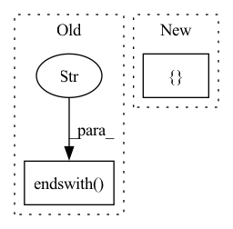

Pattern ID :4469
Before Change
else:
command = []
if not (len(command) > 0 and (command[0].endswith(".py" ) or command[0].endswith(".ipynb"))):
raise errors.InvalidExperimentException(
"Must specify the command to run the experiment file. "
"The experiment file needs to have a suffix of .py or .ipynb."After Change
exp_path = pathlib.Path(sys.argv[0]).resolve()
exp_rel_path = exp_path.relative_to(context_dir.resolve())
if exp_rel_path.suffix in { "py", "ipynb"In pattern: SUPERPATTERN
Frequency: 5
Non-data size: 2
Instances Fragment ID: 16285194
Project Name: determined-ai/determined
Commit Name: b95362356499a9313e9c45dec9410397a4241c30
Time: 2020-04-22
Author: yoavz@determined.ai
File Name: harness/determined/experimental/_native.py
M Class Name: AnonimousClass
N Class Name: AnonimousClass
M Method Name: set_command_default(2)
N Method Name: set_command_default(2)
M Parent Class:
N Parent Class:
M File Name: harness/determined/experimental/_native.py
N File Name: harness/determined/experimental/_native.py
M Start Line: 52
M End Line: 63
N Start Line: 48
N End Line: 62
Before Change
"tf_bert_model/bert/encoder/layer_._0/output"]
for layernorm_path in layernorm_paths:
input_quant_op = ("{}/add/add_1_quantized".format(layernorm_path) if layernorm_path.endswith("embeddings" )
else "{}/add_quantized".format(layernorm_path), True)
output_quant_op = ("{}/LayerNorm/batchnorm/add_1_quantized".format(layernorm_path), True)
beta_quant_op = ("{}/LayerNorm/batchnorm/ReadVariableOp_quantized".format(layernorm_path), False)
gamma_quant_op = ("{}/LayerNorm/batchnorm/mul/ReadVariableOp_quantized".format(layernorm_path), True)After Change
beta_quant_op = ("{}/LayerNorm/batchnorm/ReadVariableOp_quantized".format(layernorm_path), False)
gamma_quant_op = ("{}/LayerNorm/batchnorm/mul/ReadVariableOp_quantized".format(layernorm_path), True)
quant_ops_to_check += [ output_quant_op, beta_quant_op, gamma_quant_op Fragment ID: 16285195
Project Name: quic/aimet
Commit Name: 4532e384a2e40d47db65579f9979a7ce8d682982
Time: 2022-05-03
Author: quic_kyuykim@quicinc.com
File Name: NightlyTests/tensorflow/test_transformer_with_tokenizers.py
M Class Name: TransformerQuantizationAcceptanceTests
N Class Name: TransformerQuantizationAcceptanceTests
M Method Name: test_hf_bert_with_tokenizer(1)
N Method Name: test_hf_bert_with_tokenizer(1)
M Parent Class: unittest.TestCase
N Parent Class: unittest.TestCase
M File Name: NightlyTests/tensorflow/test_transformer_with_tokenizers.py
N File Name: NightlyTests/tensorflow/test_transformer_with_tokenizers.py
M Start Line: 92
M End Line: 112
N Start Line: 92
N End Line: 120
Before Change
next_token = sp.IdToPiece(int(predicted_id))
logging.info(next_token)
if next_token.endswith("\n" ) :
return pred_string(text_generated) + next_token[:-1]
elif 0 < store.gen_chars <= len(text_generated):
return pred_string(text_generated)After Change
input_eval = tf.expand_dims(input_eval, 0)
// Empty string to store each line
sentence_ids = []
// Here batch size == 1
model.reset_states()
Fragment ID: 16285196
Project Name: gretelai/gretel-synthetics
Commit Name: 447358d3e7a1e26e647796e4d83da4a37a4f8bfe
Time: 2020-03-17
Author: zredlined@users.noreply.github.com
File Name: src/gretel_synthetics/generate.py
M Class Name: AnonimousClass
N Class Name: AnonimousClass
M Method Name: predict_chars(4)
N Method Name: predict_chars(4)
M Parent Class:
N Parent Class:
M File Name: src/gretel_synthetics/generate.py
N File Name: src/gretel_synthetics/generate.py
M Start Line: 111
M End Line: 138
N Start Line: 109
N End Line: 133
Before Change
// TODO: backard compatibility for users without audio dependencies
array, sampling_rate = (
self._decode_example_with_torchaudio(value)
if value.endswith(".mp3" )
else self._decode_example_with_librosa(value)
)
return {"path": value, "array": array, "sampling_rate": sampling_rate}
After Change
array, sampling_rate = self._decode_non_mp3_file_like(file)
else:
array, sampling_rate = self._decode_non_mp3_path_like(path)
return { "path": path, "array": array, "sampling_rate": sampling_rate}
def _decode_non_mp3_path_like(self, path):
try:
import librosa Fragment ID: 16285199
Project Name: huggingface/datasets
Commit Name: 07872f7454d86728efe9e3b79e3054699b8c1d1e
Time: 2021-11-17
Author: 8515462+albertvillanova@users.noreply.github.com
File Name: src/datasets/features/audio.py
M Class Name: Audio
N Class Name: Audio
M Method Name: decode_example(2)
N Method Name: decode_example(2)
M Parent Class:
N Parent Class:
M File Name: src/datasets/features/audio.py
N File Name: src/datasets/features/audio.py
M Start Line: 41
M End Line: 45
N Start Line: 70
N End Line: 78
Before Change
)
ipynb_files = [
fi for fi in os.listdir(zenml_tutorial_path) if fi.endswith(".ipynb" )
]
ipynb_files.sort()
console.print(zenml_go_notebook_tutorial_message(ipynb_files), width=80)
input("Press ENTER to continue...")After Change
)
// get list of all .ipynb files in zenml_tutorial_path
ipynb_files = []
for dirpath, _, filenames in os.walk(zenml_tutorial_path):
for filename in filenames:
if filename.endswith(".ipynb"):
ipynb_files.append(os.path.join(dirpath, filename)) Fragment ID: 16285191
Project Name: maiot-io/zenml
Commit Name: 395d761ef5878a71f13f9ea41a6c3e7697cd2199
Time: 2022-05-24
Author: felix@zenml.io
File Name: src/zenml/cli/base.py
M Class Name: AnonimousClass
N Class Name: AnonimousClass
M Method Name: go(0)
N Method Name: go(0)
M Parent Class:
N Parent Class:
M File Name: src/zenml/cli/base.py
N File Name: src/zenml/cli/base.py
M Start Line: 204
M End Line: 235
N Start Line: 205
N End Line: 248